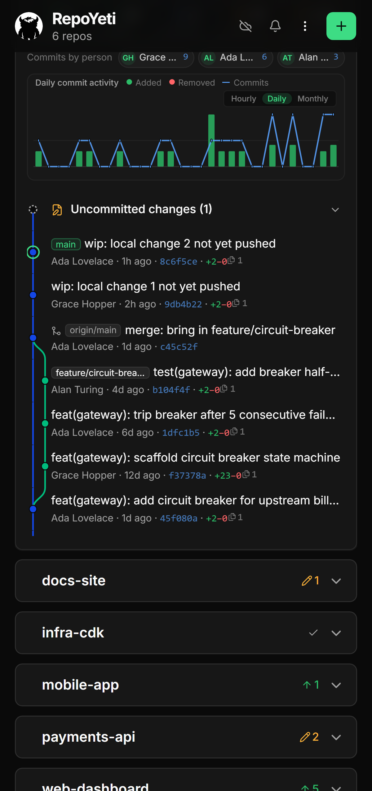
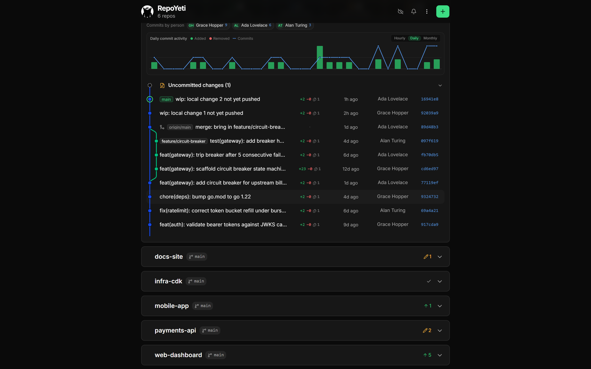
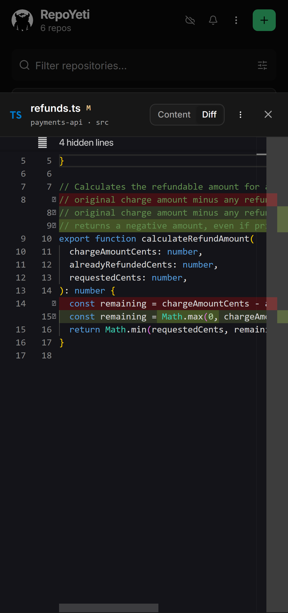
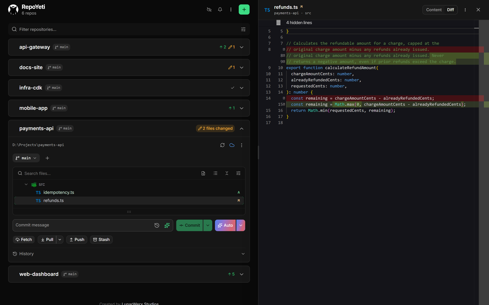

Self-hosted remote git manager
Push a hotfix from your phone.
RepoYeti is a little daemon that runs on your computer, finds your repos, and puts them on your phone. Fetch, commit, and push from wherever you are.
Why it exists
Your build went red. You're at dinner.
You're away from your desk and something needs a git command right now. RepoYeti is for those moments, so you're not typing SSH keys into a phone keyboard or waiting until you get home.
What it won't let you do
An app that can push git from your phone should scare you.
So we left the dangerous parts out. There's no force-push and no reset --hard anywhere in it — a phone is a lousy place to rewrite history.
- Pull only fast-forwards. If your branch has diverged, it stops and tells you instead of merging.
- No force-push. The flag doesn't exist in here.
- Commits use the right identity. So nothing goes out under your personal email at 11pm.
- Discarding a file shows the diff first. Nothing disappears on you.
History
The commit graph, like you get on desktop.
Branches get their own lanes, merges connect back up, and your uncommitted changes sit right at the top. It's your actual git log, drawn out — not a flat list of messages.


Viewer & diffs
It's the actual VS Code editor.
Open a file and you get real Monaco — syntax highlighting, proper diffs against HEAD, and the unchanged parts folded out of the way. Need to fix a typo? Edit it and save, right there.


Every repo, one screen
See your whole machine at once.
RepoYeti tracks every repo you've got and shows which ones are dirty, ahead, or behind. It's live, so when something changes the screen just updates. No refresh button.
↻ Fetch everything at once
One tap checks every repo. Handy for spotting what moved overnight.
◈ Updates live
Commit in your terminal and watch it show up here.
⚑ Pin and hide
Keep the repos you actually use on top. Hide the rest.
⌥ Right identity, always
Work email on work repos, personal on the rest. You don't have to think about it.
Smart Commit
Let AI untangle a messy commit.
You've got a dozen files touching three unrelated things. Smart Commit reads the diff and suggests splitting it into clean commits. Tweak the plan, or just let it run.
Bring your own key — Groq, Gemini, Claude, whatever you use. It stays on your machine, and your code only ever reaches the model you picked.
On purpose
Things it won't do.
- ✕ No force push
- ✕ No hard reset
- ✕ No rebase from your phone
- ✕ No non-fast-forward merge
- ✕ No identity mix-ups
- ✕ No keys leaving your daemon
For anything you can't take back, use your laptop.
No lock-in
It's still just git.
Under the hood it's simple-git working on the repos already on your disk. No custom remote, no weird history, nothing to migrate. Delete RepoYeti and your repos are exactly how you left them.
Running it
How to run it.
It's one binary. Point it at your code folders and it starts a local server, then tunnels it out so your phone can reach it. Sign in with Connections and you're in.
Bun · bun:sqlite · Hono · simple-git · Vue 3 + Tailwind PWA